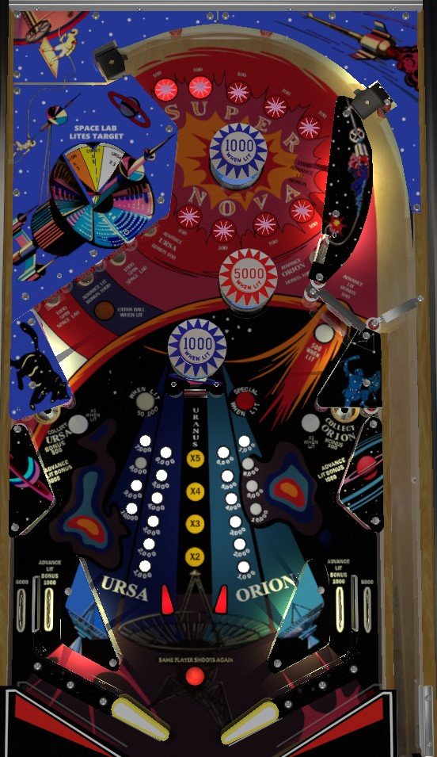

If the center target is lit for 50,000 points, shoot it. Otherwise, shoot the right spinner from the left flipper, and from the right flipper, either shoot for one of the Spin Space Lab standup targets on the left or transfer the ball to the right flipper for a spinner shot, which builds bonus and takes you back to the top of the playfield for a chance at more bonus multipliers.
Super Nova has two different bonus counts: the Ursa bonus on the left and the Orion bonus on the right. One of the two bonuses is selected at any time, alternating any time a 10 point switch is hit. The two standup targets closest to the Nova star rollovers score 100 points and specifically advance the Ursa (left target) and Orion (right target) bonuses. The in lanes, the second standup target in the middle left, the wall switch to the right of the star rollovers, and the wall switches below the lower saucers each advance the selected bonus by one step (and scores 1,000 points directly). The spinner also awards one advance of the selected bonus per spin, so one good shot to the spinner should be able to max out the selected bonus.
Roll over a Super Nova target at the top of the playfield to light it. On easy settings, lighting up a star rollover scores 1,000 points and one advance of the selected bonus, and subsequent hits of the same star score 100 points and no bonus; on hard settings, star rollovers always score 100 points and no bonus. Spelling either Super or Nova (or spelling SuperNova in its entirety, on very hard settings) advances the bonus multiplier toward the maximum of 5x. Spelling Super/Nova/SuperNova again when bonus is already maxed out at 5x scores 50,000 points. There's very limited control at the top of the playfield, so just get back here as much as you can to get as many chances as possible at building bonus multiplier.
The lower left and right saucers collect the Ursa and Orion bonuses respectively, regardless of which bonus is currently selected. The saucers also score an extra 500 points on top of the bonus collect, as well. Bonus collects from the saucers completely ignore the bonus multiplier; however, one of the awards from the Space Lab spinner can light one of the saucers at a time for a 3x collect. Game settings determine whether a collected bonus is restored to its previous value or reset to 1,000 points after being collected. Both bonuses max out at 19,000 points. At the end of the ball, only the selected bonus is scored, but this time the bonus multiplier is taken into consideration.
The Space Lab wheel is partially hidden under plastic in the upper left of the game. It can do one of 6 things:
The wheel is spun any time the first or third upper left standup targets are hit (counting from the left), as well as at the start of any ball and any time a Special is collected from the center standup target. A game setting determines whether or not collecting the center target 50,000 will cause the wheel to spin as well. Center target 50,000 is by far the most valuable of the bunch, because even if shooting the center target ends up causing a drain, the 50,000 points is more valuable than most entire balls on Super Nova.
Blue bumpers score 100 points or 1,000 when lit; the top bumper is lit after completing Super once on the current ball, and the bottom bumper is lit after completing Nova once on the current ball. The center red pop bumper scores 100 points or 5,000 when lit, and is lit whenever the bonus multiplier is 3x or higher.
If you drain with an extra ball, all lit playfield features are carried over for the extra ball, including:
If you drain without scoring an extra ball, all features will be unlit at the start of your next turn, both bonuses and all bonus multipliers being cleared.
Super Nova has a conventional in/out lane setup. In lanes score 1,000 points and advance the selected bonus once. Out lanes score 5,000 points.
Discussed above.